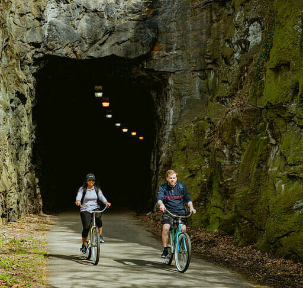

Explore Lynchburg's Trails
Lynchburg is located along the James River in central Virginia and has a variety of parks, greenways, and trails for people to explore. These trails provide opportunities for hiking, walking, running, and biking.
Some trails travel alongside creeks and rivers, while others pass through wooded areas and parks. Exploring these trails can be a great way to spend time outdoors and discover more of Lynchburg's natural surroundings.
Why Go Hiking?
Hiking can be an enjoyable way to spend time outside and explore the local environment. Some reasons people choose to hike include:
- Enjoying nature and fresh air
- Getting outdoor exercise
- Exploring local parks and trails
- Seeing plants, trees, and wildlife
- Taking a break from everyday routines
How to Prepare for a Hike
Before heading out on a trail, it is helpful to prepare for the weather, distance, and conditions of the trail.
- Choose a trail that matches your experience level.
- Check the weather before leaving.
- Bring enough water for your hike.
- Wear comfortable shoes and appropriate clothing.
- Stay on designated trails and respect nature.
Featured Trail: Blackwater Creek Trail

Blackwater Creek Trail is one of the recreational trails in Lynchburg. The trail follows Blackwater Creek and passes through a natural, wooded environment close to the city.
The trail is used by people for activities such as walking, running, and biking. Its connection to other trails also makes it part of Lynchburg's larger trail network.
Discover More Trails
Lynchburg has several other trails and outdoor areas worth exploring. Visit our Trail Guide to learn more about places such as Percival's Island, Alpine Trail, Creekside Trail, and Ivy Creek Greenway.
Read the Lynchburg Trail Guide